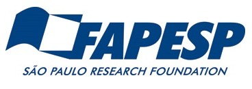
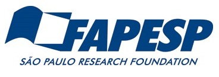
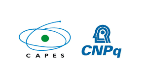
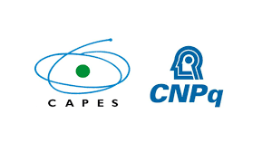

Socially Responsible and Explainable Methods and Corpora for Low-Resource Hate Speech Detection
Language is often used to discriminate, attack, and terrorize people. In the same settings, stereotypes and prejudices are communicated by language and potentially perpetuated at scale on the web and social. While the study on hateful communication is an urgent and relevant issue, there is a significant lack of research concerning explainable hate speech detection, as well as social bias in hate speech technologies. To fill these important research gaps, and due to the severity of social media abusive comments in Global South countries, this research project aims to investigate and provide socially responsible and explainable methods and data resources for low-resource hate speech detection. Specifically, we focus on the Brazilian Portuguese and Hausa African Indigenous languages.
As obtained results, we developed a novel optimized bag-of-words machine learning model by contextual lexicon for explainable hate speech detection. Our method embodies explicit and implicit pejorative terms from a specialized lexicon annotated with contextual information. The proposed method overcame literature baselines and it is the current state-of-the-art for Portuguese. Furthermore, we also created the first large-scale expert annotated corpus for Brazilian hate speech detection, the the first expert annotated corpus for Hausa hate speech detection and a specialized offnsive lexicon. The HateBR corpus was collected from the comment section of Brazilian politicians' accounts on Instagram and manually annotated by experts. It is composed of 7,000 documents annotated according to three different layers: a binary classification (offensive versus non-offensive comments), offensiveness-level classification (highly, moderately, and slightly offensive), and nine hate speech groups (xenophobia, racism, homophobia, sexism, religious intolerance, partyism, apologist for dictatorship, antisemitism, and fatphobia) . In addition, we also created the HausaHate corpus, which comprises 2,000 comments extracted from West African Facebook pages and manually annotated by NLP experts in two layers: binary classification (offensive and non-offensive), and hate speech targets (race, gender and non-target). The proposed specialized offensive lexicon titled MOL - Multilingual Offensive Lexicon, which was manually identified by a linguist from the proposed HateBR corpus, holds 1,000 explicit and implicit pejorative terms and expressions annotated with contextual information (context-dependent and context-independent). Both the corpus and the lexicon were annotated by three different experts and achieved high inter-annotator agreement. We also developed the first web system for the Brazilian Portuguese offensiveness analysis . The NoHateBrazil web system analyzes fine-grained offensiveness (highly, moderately, and slightly), and provides a new measure to evaluate the reliability of machine-learning prediction, which is shown to the user. Finally, we proposed a new explainable method to assess discriminatory social bias in machine learning-based hate speech classifiers. The method titled Social Stereotype Analysis (SSA) assesses the potential of hate-speech classifiers to reflect social stereotypes through the investigation of stereotypical beliefs by contrasting them with counter-stereotypes.
Head
- Francielle Vargas. University of São Paulo, Brazil
Team
- Shamsuddeen H. Muhammad. Imperial College London, UK
- Ibrahim Said Ahmad. Northeastern University, USA
- Diego Alves. Saarland University, Germany
- Wolfgang Schmeisser. University of Barcelona, Spain
- Ali Hürriyetoğlu. Royal Netherlands Academy of Arts and Sciences, Netherlands
- Idris Abdulmumin. Ahmadu Bello University, Nigeria
- Isadora Salles. Federal University of Minas Gerais, Brazil
- Samuel Guimarães. Federal University of Minas Gerais, Brazil
- Fabiana Goés. University of São Paulo, Brazil
- Isabelle Carvalho. University of São Paulo, Brazil
- Thiago Pardo. University of São Paulo, Brazil
- Fabrício Benevenuto. Federal University of Minas Gerais, Brazil
Publications
-
HausaHate: An Expert Annotated Corpus for Hausa Hate Speech Detection
Francielle Vargas, Samuel Guimarães, Shamsuddeen H. Muhammad, Diego Alves, Ibrahim Said Ahmad, Idris Abdulmumin, Diallo Mohamed, Thiago A.S. Pardo, Fabrício Benevenuto
8th Workshop on Online Abuse and Harms (NAACL 2024). pp. 1-6. accepted
-
Context-Aware and Expert Data Resources for Brazilian Portuguese Hate Speech Detection
Francielle Vargas, Isabelle Carvalho, Thiago A.S. Pardo, Fabrício Benevenuto
Natural Language Engineering Journal (now called Natural Language Processing). Cambridge core. pp. 1-21. accepted
-
Socially Responsible Hate Speech Detection: Can Classifiers Reflect Social Stereotypes?
Franciell Vargas, Isabell Carvalho, Ali Hürriyetoğlu, Thiago A.S. Pardo, Fabrício Benevenuto
Recent Advances in Natural Language Processing (RANLP 2023). pp. 1187–1196. Varna, Bulgaria. see
-
NoHateBrazil: A Brazilian Portuguese Text Offensiveness Analysis System
Franciell Vargas, Isabelle Carvalho, Wolfgang Schmeisser-Nieto, Fabrício Benevenuto, Thiago A.S. Pardo
Recent Advances in Natural Language Processing (RANLP 2023). pp.1180–1186. Varna, Bulgaria. see
-
HateBR: A Large Expert Annotated Corpus of Brazilian Instagram Comments for Offensive Language and Hate Speech Detection
Franciell Vargas, Isabelle Carvalho, Fabiana R. Góes, Thiago A.S. Pardo, Fabrício Benevenuto
13th Conference on Language Resources and Evaluation (LREC 2022). pp. 7174–7183. Marseille, France. see
-
Contextual-Lexicon Approach for Abusive Language Detection
Francielle Vargas, Fabiana R. Góes, Isabelle Carvalho, Fabrício Benevenuto, Thiago A.S. Pardo
Recent Advances in Natural Language Processing (RANLP 2021). pp. 1442-1451. Held Online. see
Resources
Patents
- A Post-hoc Explanation Method by Stereotypes and Counter-Stereotypes to Assess Social Bias in Hate Speech Classifiers. to appear
- Optimized Bag-of-Words Model by Contextual Lexicon for Explainable Hate Speech Detection. to appear
Dataset
- HateBR: Large-scale expert annotated corpus of Brazilian Instagram comments for abusive language detection.
- HausaHate: An expert hate speech corpus of Facebook comments for the Hausa African Indigenous language.
Lexicon
- MOL: Multilingual offensive lexicon annotated with contextual information.
Software
- NoHateBrazil: A Brazilian Portuguese offensive comments analysis system.
 

 
